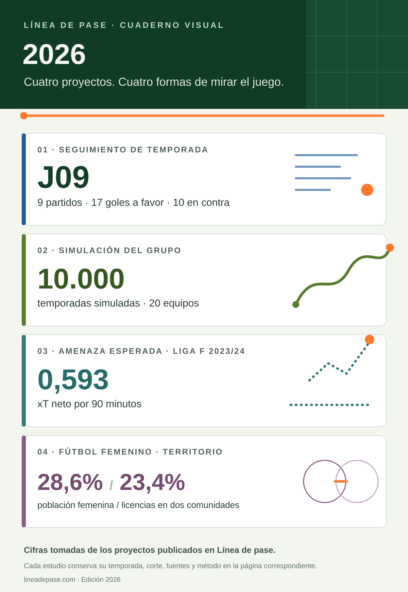
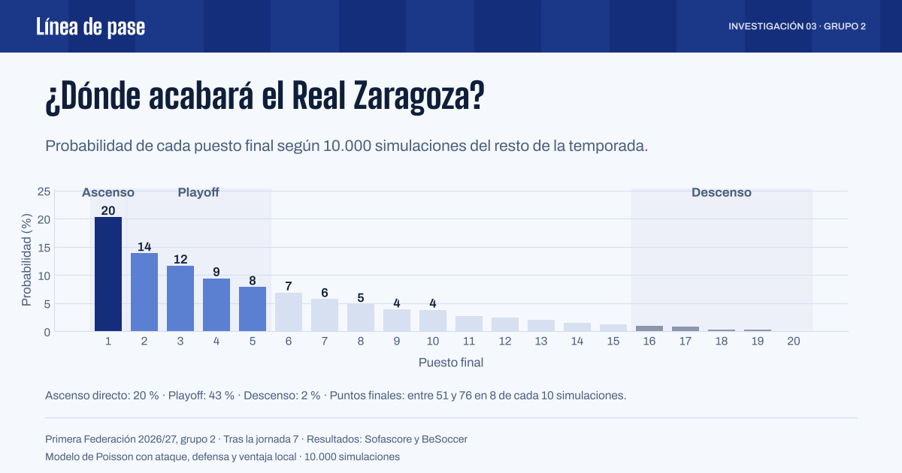
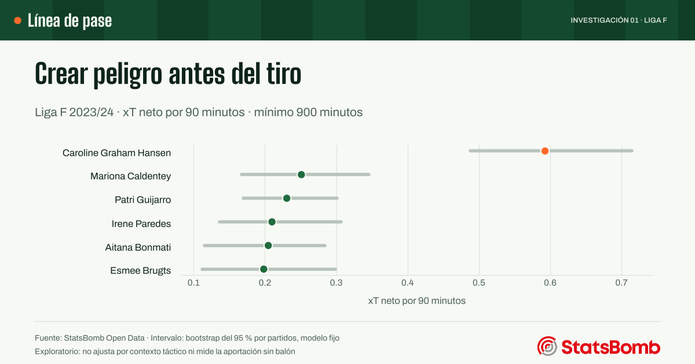

Proyectos
Análisis de fútbol con datos públicos, con las fuentes y el código a la vista.
Línea de pase · Colección visual
Cuadernos de fútbol y datos
Una pregunta guía cada análisis. El sello identifica su enfoque; la competición, el método y los límites aparecen junto a cada portada.
Línea de pase · Edición visual 2026
Cuatro proyectos, cuatro formas de mirar el juego
Cifras de trabajos ya publicados; cada temporada y su corte permanecen visibles en el análisis correspondiente.


-
Investigación

Investigación
Primera Federación · Grupo 2 · Tras la jornada 8
¿Y si el grupo 2 se jugara 10.000 veces?
Una simulación Monte Carlo de lo que queda de temporada, con las probabilidades de ascenso, playoff y descenso de los 20 equipos.
- Pregunta
- ¿Qué probabilidad tiene cada equipo de ascender, jugar el playoff o descender?
- Método
- Modelo de Poisson con ataque, defensa y ventaja local, validación cruzada por jornadas y 10.000 temporadas simuladas.
- Resultado
- Probabilidades por equipo y puesto, con su evolución jornada a jornada.
- Aportación
- Preparación de datos, modelo en Python, comprobaciones y comunicación del análisis.
-
Investigación

Investigación
Liga F 2023/24 · StatsBomb Open Data
El peligro empieza antes del último pase
Un modelo propio de amenaza esperada (xT) para medir quién acerca el balón a las zonas de gol con pases y conducciones.
- Pregunta
- ¿Qué jugadoras acercan el balón a las zonas de gol antes del tiro?
- Método
- Modelo propio de xT sobre pases y conducciones, con validación fuera de muestra.
- Resultado
- Clasificación por 90 minutos, intervalos y resultados descargables de la Liga F 2023/24.
- Aportación
- Preparación de datos, implementación del modelo, comprobaciones y comunicación del análisis.
-
Seguimiento de temporada
Seguimiento de temporada
Actualizado tras la jornada 8
Real Zaragoza 2026/27, jornada a jornada
Resultados, goles, tiros, minutos y clasificación en Primera Federación, con panel interactivo, informe y previa de cada partido.
- Pregunta
- ¿Cómo evoluciona el equipo y qué explica sus resultados?
- Método
- Seguimiento por jornada, contraste de fuentes y comparación con el grupo.
- Resultado
- Panel, fichas de partido y gráficos de evolución.
- Aportación
- Recopilación, preparación de datos, visualización y análisis editorial.
-
Trabajos del máster

Trabajos del máster
Módulo 1 · Datos del CSD y del INE
Fútbol femenino: dónde empezar a ampliar la base
Licencias federativas y población por comunidad para elegir dónde tendría más sentido un programa de iniciación.
- Pregunta
- ¿Dónde empezar un programa de iniciación?
- Método
- Licencias del CSD y población del INE; tasas y criterios de selección explícitos.
- Resultado
- Andalucía y Comunitat Valenciana como propuesta inicial, pendiente de contrastar la demanda.
- Aportación
- Análisis publicado con mapa, tablas, código y límites del estudio.
-
Divulgación

Divulgación
Vídeo subtitulado · Goles esperados (xG)
xG, sin líos
¿Puedes crear más peligro y aun así perder? Una explicación visual de qué mide el xG y cómo interpretarlo.
Ver la explicación
Los trabajos del Máster en Big Data Deportivo se publican cuando están corregidos. Los vídeos explicativos están en Vídeos.
Para clubes, medios y proyectos deportivos
Tres trabajos para conocer su enfoque
Del seguimiento de un equipo a un modelo propio: las preguntas, las decisiones y los resultados de una selección de proyectos.
Ver la selección de trabajos